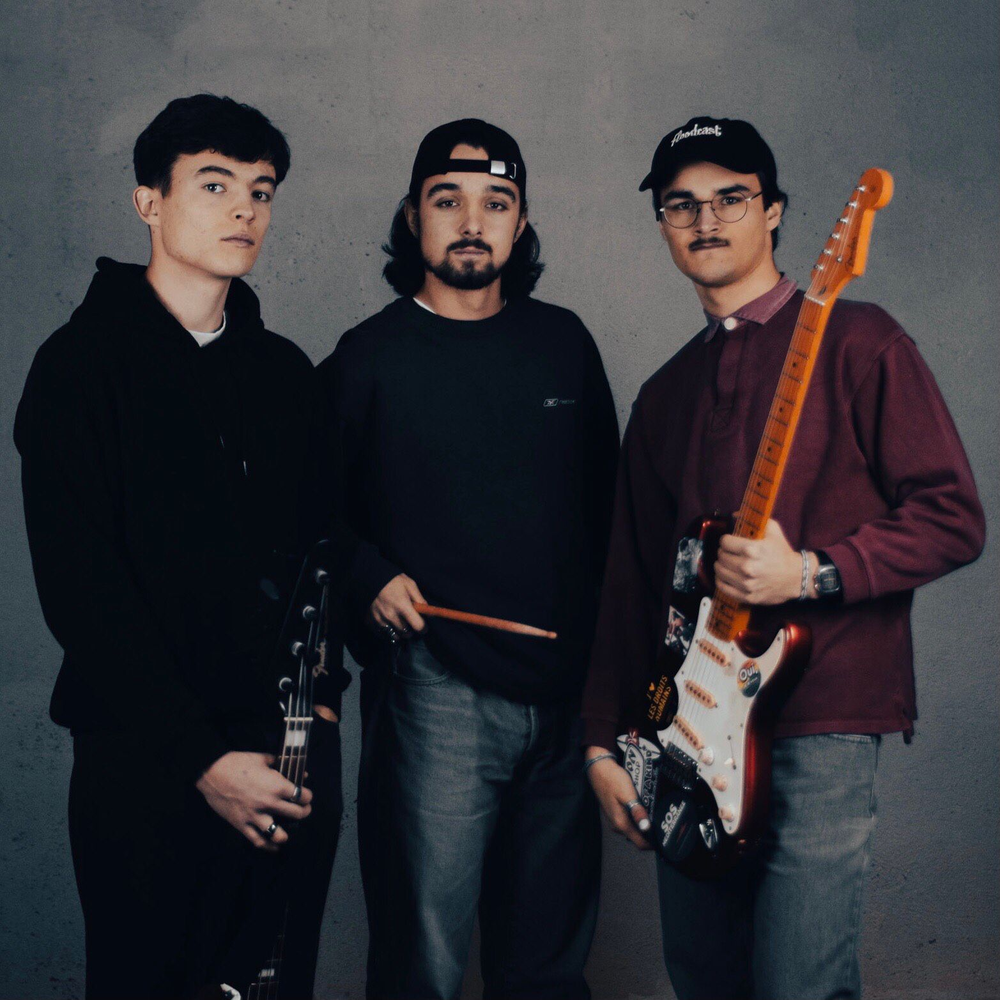

We didn't know what to do for Halloween 2017, so we decided to play blues. It wasn't really in rhythm, we needed a drummer...
It was only three days before our first show, on May 6, 2018, that entered in the band, one of our buddies of childhood, who played drums, and the name of band Black Paradise with it. Then, the blues turned into rock, influenced by AC/DC, Guns n' Roses and many others... That was our cover period. As soon as a band inspired us, we wanted to strum it, sing along and get our kicks !
It was nice to do covers, it allowed us to do some gigs and to have songs to play, but we were missing something... That's when we started to compose.
After the album Friend Experiences, released in 2020, gathering all our songs, composed between 2018 and 2020, we wanted to go further... Our expectations and influences started to change, until we decided, in 2021, to separate from our drummer, Loïc Lanfranchi.
Our first concert as a trio, at Montreux Trail Festival, on July 23, 2021, confirmed our will to continue with this new formation, the band Punchy Parasites.
A long period of rearrangements of our old songs, a switch from guitar to drums for the singer, and some practice concerts led us to self-produce the songs we wanted to keep from Black Paradise, with Wingless Bird on Plane, a new song, which launches and definitively establishes our style.
The current formation is composed of a singer/drummer (Loris Henry), a guitarist (Robin Lüthi) and a bass player (Maxime Bossel).
On ne savait pas quoi faire pour Halloween 2017, alors on s'est dit qu'on allait faire du blues. C'était pas tellement en rythme, on avait besoin d'un batteur...
Ce n’est que trois jours avant notre premier concert, le 6 mai 2018, qu’on fait entrer dans le groupe, un de nos potes d’enfance, qui faisait de la batterie, et le nom de groupe Black Paradise avec.
C’est à ce moment là que le blues s’est transformé en rock, influencé par AC/DC, les Guns n’ Roses et bien d’autres… C’était notre période des reprises. Dès qu’un groupe nous inspirait, on voulait le gratter, chanter et se faire kiffer.
C’était bien les reprises, ça nous permettait de faire quelques concerts et d’avoir des morceaux à jouer, mais il nous manquait quelque chose... C’est là qu’on a commencé à composer.
Après l’album Friend Experiences, sorti en 2020, regroupant tous nos morceaux composés entre 2018 et 2020, nous voulions aller plus loin… Nos attentes et nos influences ont commencé à changer, jusqu’à ce qu’on décide, en 2021, de se séparer de notre batteur, Loïc Lanfranchi.
Notre premier concert à trois, au Montreux Trail Festival, le 23 juillet 2021, a confirmé notre volonté de continuer avec cette nouvelle formation, le groupe Punchy Parasites.Une longue période de réarrangements de nos anciens morceaux, un passage de la guitare à la batterie, pour le chanteur, et de concerts de rodages nous ont mené à autoproduire les morceaux qu’on voulait garder de Black Paradise, avec Wingless Bird on Plane, nouveau morceau, qui lance et inscrit définitivement notre style.
La formation actuelle est composée d’un chanteur/batteur (Loris Henry), un guitariste (Robin Lüthi) et un bassiste (Maxime Bossel).